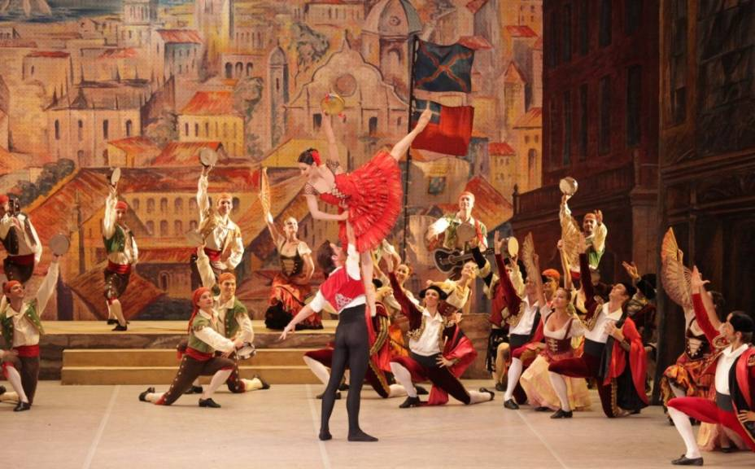

Dom Quixote
Baseado na obra do século XVI de mesmo nome e de autoria de Miguel de Cervantes.
O protagonista da obra é Dom Quixote, um pequeno fidalgo castelhano que perdeu a razão por muita leitura de romances de cavalaria e pretende imitar seus heróis preferidos. O romance narra as suas aventuras em companhia de Sancho Pança, seu fiel amigo e companheiro, que tem uma visão mais realista. A ação gira em torno das três incursões da dupla por terras da Mancha, de Aragão e da Catalunha. Nessas incursões, ele se envolve em uma série de aventuras, mas suas fantasias são sempre desmentidas pela dura realidade. O efeito é altamente humorístico. O encanto da obra nasce do descompasso entre o idealismo do protagonista e a realidade na qual ele atua. Cem anos antes, Quixote teria sido um herói a mais nas crônicas ou romances de cavalaria, mas ele havia se enganado de século. Sua loucura residia no anacronismo. Isso permitiu ao autor fazer uma sátira de sua época, usando a figura de um cavaleiro medieval em plena Idade Moderna para retratar uma Espanha que, após um século de glórias, começava a duvidar de si mesma.